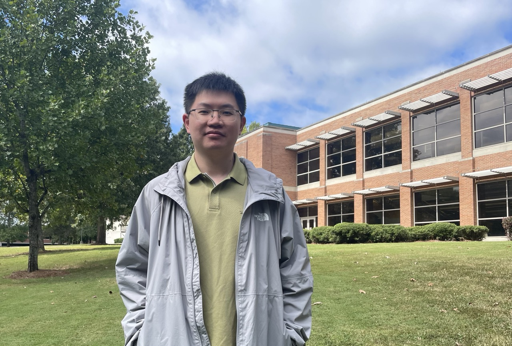

I am a fourth-year Ph.D. student in the Department of Mathematics and Statistics at Georgia State University, advised by Yi Zhao. I expect to graduate in 2027. Previously, I received my M.S. from Shandong University and my B.S. from Peking University.
My research interests lie in extremal and probabilistic combinatorics, particularly independent transversals, Turán-type problems, and sublinear expanders. I am also keen to explore new questions beyond my current work and would be happy to exchange ideas.
Email: ytang26@gsu.edu
